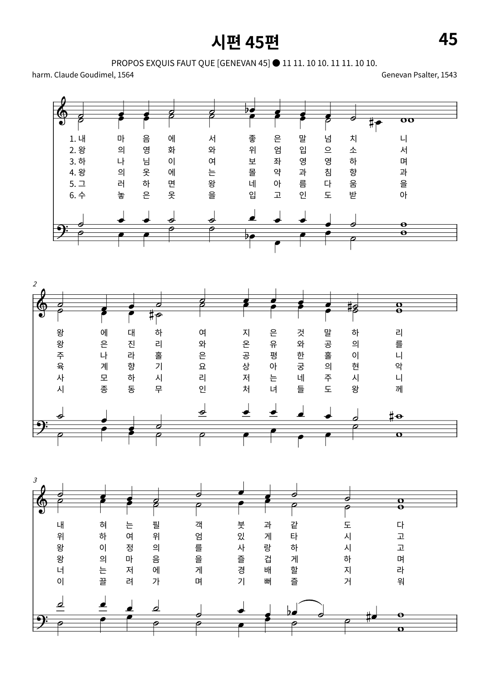

Psalm 45
PROPOS EXQUIS FAUT QUE [GENEVAN 45] · 11 11. 10 10. 11 11. 10 10.
English title: With Noble Themes My Heart and Mouth
Tune: Genevan Psalter, 1543 · Harmony: Claude Goudimel, 1564 · Lyrics: Korean adaptation of Psalm 45 from the Korean Revised Version (AI draft adaptation · not yet theologically reviewed) · 6 stanzas
Score PDF MusicXML (for printing) MusicXML (for accompaniment, with prelude and repeats) Read Psalm 45 (Korean Revised Version)
Score
← Psalm 44B ListAccompaniment (in preparation)Psalm 46 →
Lyrics (Korean)
Stanza 1
내 마음에서 좋은 말 넘치니
왕에 대하여 지은 것 말하리
내 혀는 필객 붓과 같도다
왕은 인생보다 아름다워
입술에 은혜 머금었사오니
그러므로 하나님이 왕에게
영영히 복을 주시는도다
능한 자여 칼 허리 차소서
내 마음에서 좋은 말 넘치니
왕에 대하여 지은 것 말하리
내 혀는 필객 붓과 같도다
왕은 인생보다 아름다워
입술에 은혜 머금었사오니
그러므로 하나님이 왕에게
영영히 복을 주시는도다
능한 자여 칼 허리 차소서
Stanza 2
왕의 영화와 위엄 입으소서
왕은 진리와 온유와 공의를
위하여 위엄 있게 타시고
승전하옵소서 오른손이
두려운 일을 가르치리이다
왕의 살이 날카로워 원수의
염통을 뚫으니 만민들이
왕의 앞에서 엎드리도다
왕의 영화와 위엄 입으소서
왕은 진리와 온유와 공의를
위하여 위엄 있게 타시고
승전하옵소서 오른손이
두려운 일을 가르치리이다
왕의 살이 날카로워 원수의
염통을 뚫으니 만민들이
왕의 앞에서 엎드리도다
Stanza 3
하나님이여 보좌 영영하며
주 나라 홀은 공평한 홀이니
왕이 정의를 사랑하시고
악을 미워하사 그러므로
하나님 곧 그 왕의 하나님이
즐거움의 기름으로 왕에게
부으시어 왕의 동류보다
더욱 승하게 하셨나이다
하나님이여 보좌 영영하며
주 나라 홀은 공평한 홀이니
왕이 정의를 사랑하시고
악을 미워하사 그러므로
하나님 곧 그 왕의 하나님이
즐거움의 기름으로 왕에게
부으시어 왕의 동류보다
더욱 승하게 하셨나이다
Stanza 4
왕의 옷에는 몰약과 침향과
육계 향기요 상아궁의 현악
왕의 마음을 즐겁게 하며
왕의 귀비 중엔 열왕의 딸
있으며 왕후 오빌 금으로써
꾸미고 왕의 우편에 서도다
딸이여 듣고 귀 기울이라
백성 아비 집 잊을지어다
왕의 옷에는 몰약과 침향과
육계 향기요 상아궁의 현악
왕의 마음을 즐겁게 하며
왕의 귀비 중엔 열왕의 딸
있으며 왕후 오빌 금으로써
꾸미고 왕의 우편에 서도다
딸이여 듣고 귀 기울이라
백성 아비 집 잊을지어다
Stanza 5
그러하면 왕 네 아름다움을
사모하시리 저는 네 주시니
너는 저에게 경배할지라
두로의 딸이 예물 드리고
백성 중 부자 네 은혜 구하리
왕의 그 딸이 궁중에서 모든
영화를 누리오며 그 옷은
금으로 모두 수놓았도다
그러하면 왕 네 아름다움을
사모하시리 저는 네 주시니
너는 저에게 경배할지라
두로의 딸이 예물 드리고
백성 중 부자 네 은혜 구하리
왕의 그 딸이 궁중에서 모든
영화를 누리오며 그 옷은
금으로 모두 수놓았도다
Stanza 6
수 놓은 옷을 입고 인도받아
시종 동무인 처녀들도 왕께
이끌려 가며 기뻐 즐거워
왕궁으로 들어가리로다
왕의 아들들 열조 계승하리
저희로 온 세계 군왕 삼으리
왕의 이름을 기억케 하리
만민이 영영 찬송하리라
수 놓은 옷을 입고 인도받아
시종 동무인 처녀들도 왕께
이끌려 가며 기뻐 즐거워
왕궁으로 들어가리로다
왕의 아들들 열조 계승하리
저희로 온 세계 군왕 삼으리
왕의 이름을 기억케 하리
만민이 영영 찬송하리라